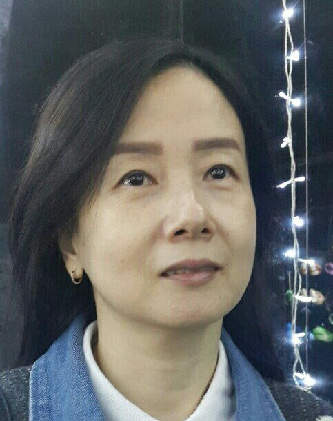

Lee Eun Ju
이은주
Painting · Portfolio
작품
Works작품을 선택하면 상세 정보를 볼 수 있습니다.
작가 소개
About
이은주
Lee Eun Ju — Painter
- 개인전 2회
- 바투아트 팜 갤러리 기획전
- 금빛사상미술협회 정기전, 기획전
- 금빛다문화교류전 (사상구청)
- 2021 의령예술천 ‘여름 낭만전’
- 부산미술대전 외 수상
- 현) 금빛사상미술협회 회원, 전업 작가
Lee Eun Ju
Painting · Portfolio
작품을 선택하면 상세 정보를 볼 수 있습니다.

Lee Eun Ju — Painter